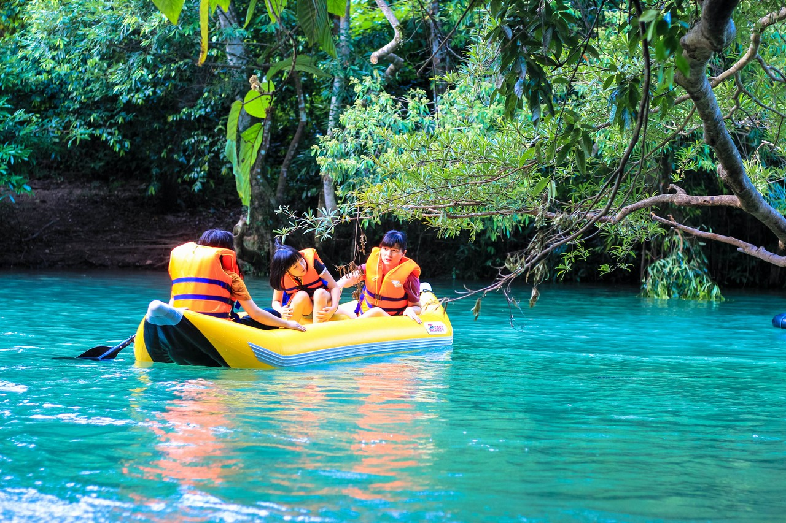
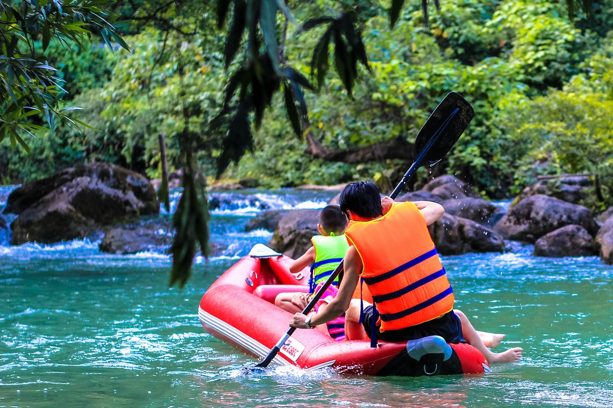
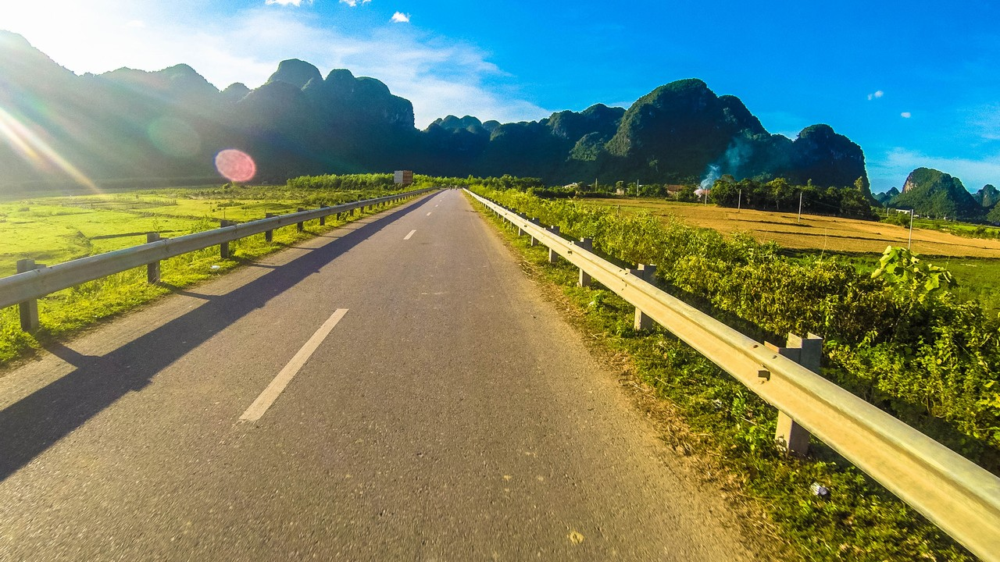
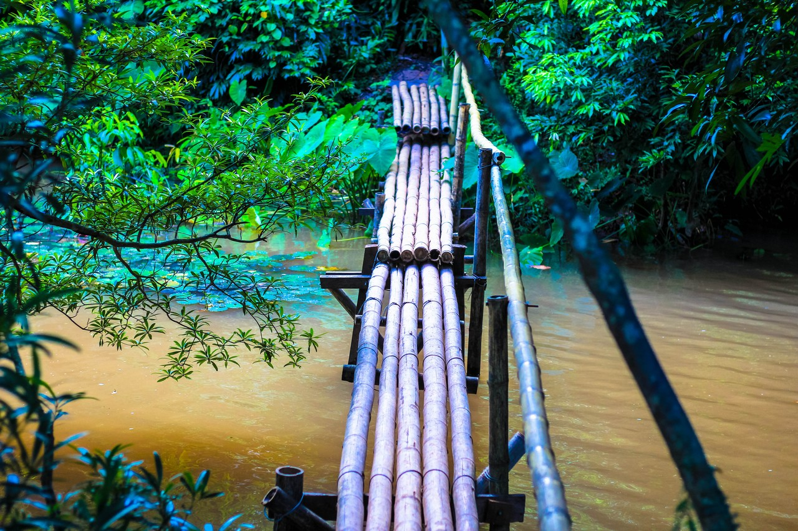
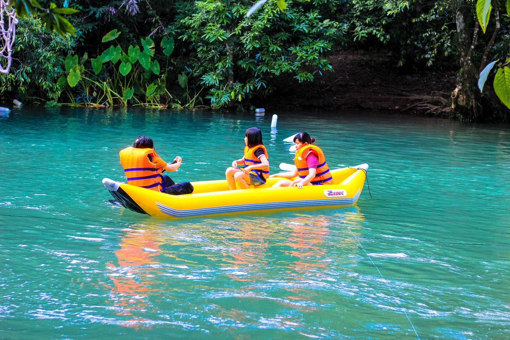
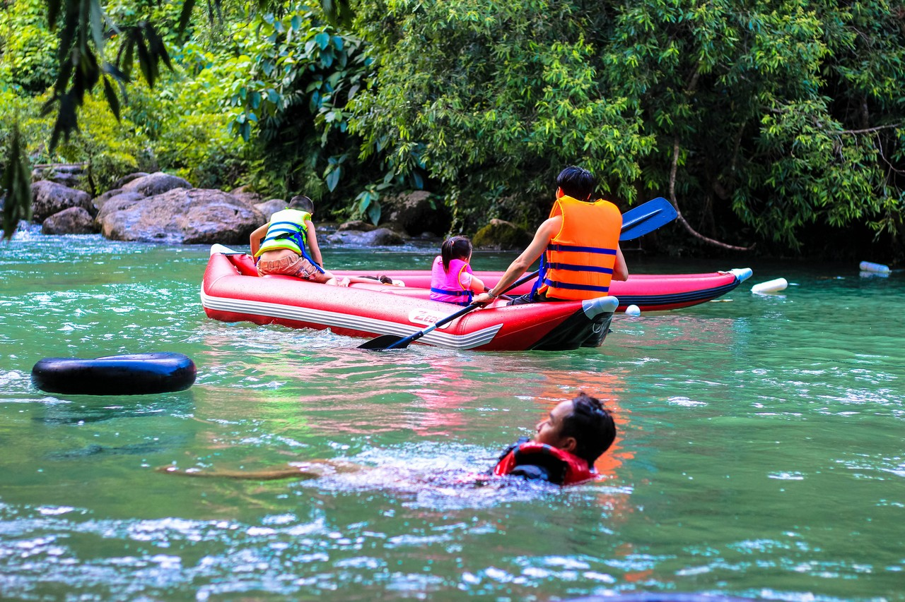
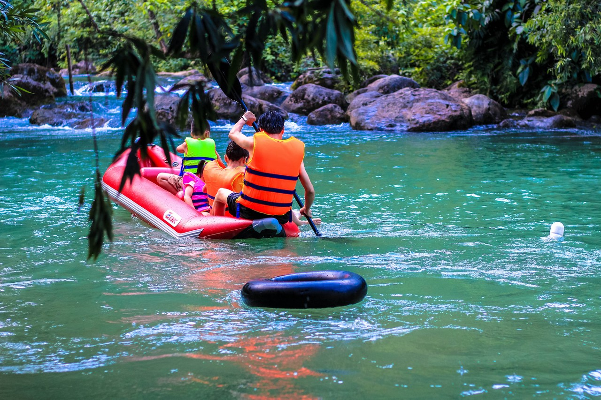
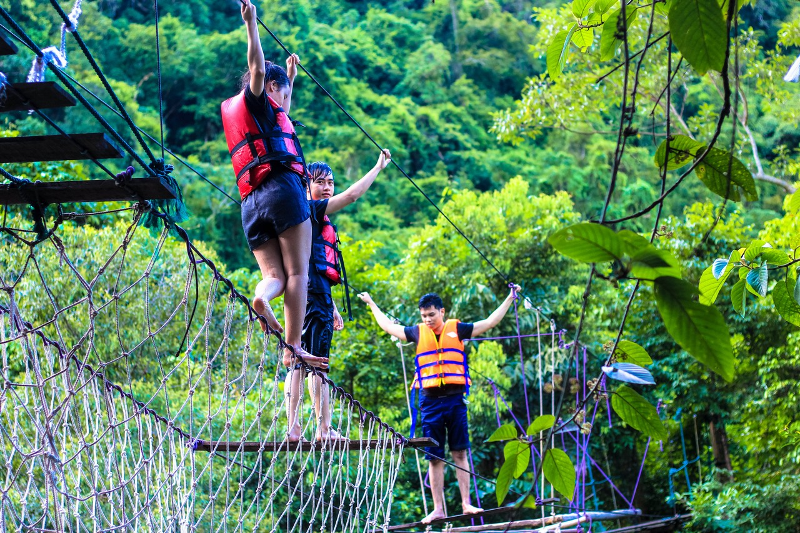
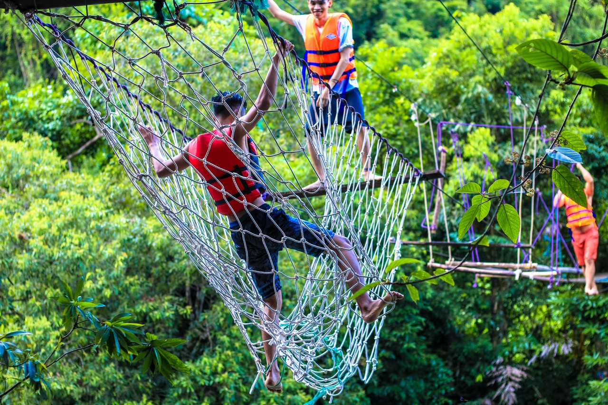
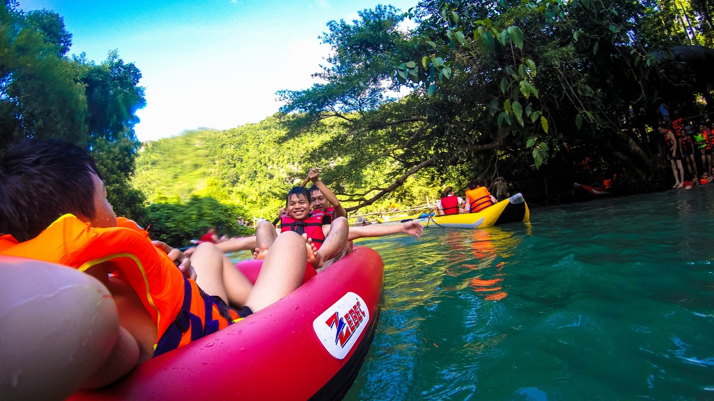

Mát lạnh, khoan khoái, êm đềm, kỳ lạ là cảm nhận của tôi khi đến với suối Nước Moọc (Quảng Bình) – viên ngọc bích ẩn mình giữa núi rừng hoang sơ. Cái nóng oi ả của những ngày hè dường như tan biến khi tôi đặt chân tới nơi đây, nơi có dòng nước suối trong xanh và nhiệt độ luôn dưới 20 độ C, kèm theo đó là rất nhiều trải nghiệm.
 Dòng nước suối Moọc mát lạnh và xanh trong
Vì sao gọi là suối Nước Moọc?
Dòng suối Nước Moọc không rõ nguồn, khi thì cuộn xoáy trên những dải đá ngầm, lắm lúc bỗng mất hút kỳ lạ vào những khe đá để rồi ùn ùn từ lòng đất “mọc” lên đầy bất ngờ. Các chuyên gia thám hiểm Hoàng gia Anh sau khi tiến hành khảo sát cho biết, dòng nước mọc lên từ lòng đất ở đây rất đặc biệt và chính họ vẫn chưa thể giải thích được. Cũng chính vì hiện tượng độc đáo này mà người dân Quảng Bình đặt cho cái tên “suối Nước Moọc”, theo tiếng địa phương “moọc” có nghĩa là “mọc”, hàm nghĩa dòng nước “mọc” từ lòng đất lên.  Theo tiếng địa phương “moọc” có nghĩa là “mọc”, hàm nghĩa dòng nước “mọc” từ lòng đất lên
Hãy thử cảm giác ngồi lơ lửng trên cao và nhìn dòng nước chảy, bạn sẽ phát hiện ra ý nghĩa tên gọi của nó
Cách đi suối Nước Moọc – Quảng Bình
Từ Đồng Hới (Quảng Bình) đi về phía Tây Nam khoảng 60 km là đến được với khu du lịch suối Nước Moọc. Đường rất dễ đi và đẹp, có thể di chuyển bằng xe máy, taxi hay là xe buýt của các hãng du lịch.  Tôi chọn việc di chuyển bằng xe máy để cho chủ động và dễ dàng ngắm trọn vẹn vẻ đẹp Quảng Bình với những cánh đồng bao la cùng những ngọn núi hùng vĩ, lần lượt hiện lên trước mắt làm cho hành trình thêm phần thú vị.
Men theo con đường nhỏ ngoằn ngoèo và đi qua cây cầu nhỏ bắc ngang dòng suối chảy, tôi như lạc về miền đất khác, nơi bốn bề là vách núi cao được bao phủ bởi những tán rừng rậm rạp, ở giữa hiện ra một vùng nước xanh trong phẳng lặng. Chỉ nhìn thôi tôi đã muốn đắm mình trong làn nước mát lạnh giữa không gian đầy thơ mộng của suối Nước Moọc.  Một cây cầu tre bắc ngang suối trên đường chúng tôi đi vào suối Nước Moọc  Nước suối trong veo, xanh ngắt đến mê người
Chơi gì ở suối Nước Moọc
Sau khi dạo một vòng và xem mọi người chơi những gì, tôi liền lấy áo phao và nhảy xuống suối để vùng vẫy cho thỏa chí, để cảm nhận rõ sự mát lạnh của dòng nước. Và đúng là có nhiều đoạn nước cứ ùn ùn mọc từ dưới lên, trông rất kỳ lạ. Suối ở đây có màu xanh ngọc bích quanh năm, đặc biệt là vào mùa hè.  Vào những ngày hè, nhiệt độ của suối khoảng 16 – 18 độ C
Tôi tranh thủ tận hưởng những phút giây thư thái khi ngồi trên thuyền kayak để nó tự trôi theo dòng chảy của suối, cảm nhận sự êm đềm của dòng nước, ngắm nhìn mọi thứ xung quanh và hòa mình vào khung cảnh đầy mê hoặc này. Đó là những gì khu du lịch suối Nước Moọc mang lại cho tôi cũng như những du khách đến đây.
 Chèo thuyền kayak là một trải nghiệm thú vị mà bất kì ai tới đây cũng muốn thử
Tôi đặc biệt ấn tượng và cảm thấy thích thú với trò nhảy cầu treo. Đây là trò có phần mạo hiểm và gây nhiều sợ hãi khi mà người chơi sẽ đi ra giữa cây cầu treo và nhảy từ trên cao xuống dưới hồ nước. Trò chơi đầy thử thách này lại càng thôi thúc những người trẻ như tôi muốn trải nghiệm thử một lần. Tuy vậy, cũng có những bạn trẻ đi ra giữa cầu nhìn xuống thấy ngợp quá nên quay vào lại. Thực sự tôi cũng sợ khi nhìn và nhảy xuống, nhất là với một người không biết bơi như tôi, cảm giác rơi tự do từ trên cao xuống thật khó tả.
 Trò chơi nhảy cầu treo thu hút nhiều bạn trẻ tham gia  Lần lượt từng người sẽ nhảy từ trên cầu treo xuống dưới sự giám sát của nhân viên khu du lịch
Ăn uống ở suối Nước Moọc – Quảng Bình
Đồ ăn ở khu du lịch suối Nước Moọc theo tôi là ngon, mọi thứ đều tươi cả. Gà đồi, lợn bản, cá suối, tôm nướng, xôi gấc, cơm nắm muối vừng, rau rừng… đều là các món ăn dân dã của người dân địa phương. Đặc biệt có món gà nướng kèm xôi gấc rất ngon. Bạn cũng có thể chế biến các món ăn cùng với các nhân viên trung tâm và thưởng thức ngay tại dòng suối. Và đặc biệt ở đây không có chén đũa, mọi người sẽ rửa sạch tay và …ăn bốc, thú vị đấy chứ! Thật khó quên được bữa cơm mang đậm hồn quê tại một nơi hoang sơ, trong âm thanh tiếng suối chảy rì rầm như thế này.
Suối Nước Moọc là điểm nghỉ chân tuyệt vời và hợp lý dành cho du khách vào những ngày hè nóng bức, nơi mà mọi mệt mỏi sẽ tan biến hết, chỉ còn lại là những phút giây hòa mình cùng thiên nhiên với vẻ đẹp hoang sơ trời ban của địa danh này. Rất phù hợp cho những chuyến đi chơi cùng gia đình, bạn bè hay đơn giản là muốn có phút giây thư giãn trước những lo toan cuộc sống. Hãy đến và trải nghiệm bạn nhé!  Hãy cùng với gia đình và bạn bè trải tận hưởng những giây phút thư giãn tuyệt vời tại suối Nước Moọc
Suối Nước Moọc là điểm nghỉ chân tuyệt vời, nơi mà mọi mệt mỏi sẽ tan biến hết, chỉ còn lại những phút giây hòa mình cùng thiên nhiên với vẻ đẹp hoang sơ trời ban của địa danh này